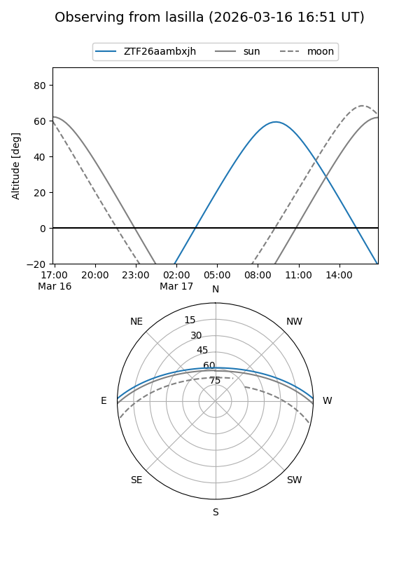
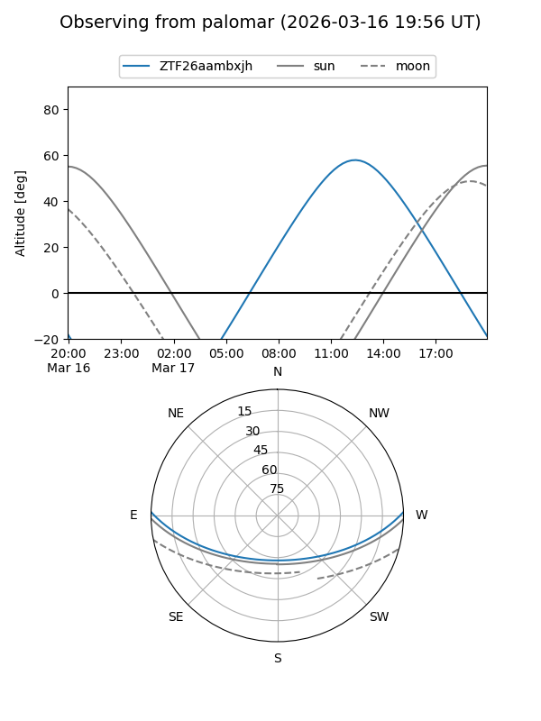

ZTF26aambxjh
Target ZTF26aambxjh at 2026-03-16 14:27
Aliases and brokers:
FINK: link
Lasair: link
ALeRCE: link
alt names
ZTF26aambxjh (ztf,fink_ztf)
Coordinates:
equatorial (ra, dec) = 243.7706,+1.37669
equatorial (HMS+DMS) = 16:15:04.94,+01:22:36.08
galactic (l, b) = (14.0069,+34.88654)
Flags:
Photometry:
last ztfg=17.50
1 ztfg detections
Lightcurve
Visibility


Additional plots